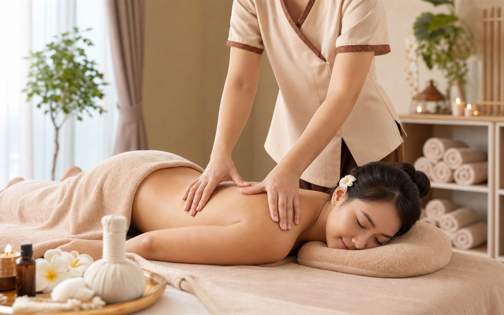

Rygg, huvud och ansiktsmassage i Handen
Rygg, huvud och ansiktsmassage
Rygg, huvud och ansiktsmassage hos Lucky Spa Massage i Handen är en behandling för dig som vill fokusera på rygg, nacke, huvud och ansikte. Det är ett bra val när du vill kombinera djupare omsorg för spända områden med en mjukare avslutning.

Lucky Spa MassageMassage för rygg, nacke, huvud och ansikte.
Vad är rygg, huvud och ansiktsmassage?
Fokus på vanliga spänningsområden
Rygg, huvud och ansiktsmassage är en behandling där massagen riktas mot områden där många samlar spänningar: rygg, nacke, huvud och ansikte. Hos Lucky Spa Massage i Handen anpassar vi tryck och tempo så behandlingen kan kännas både effektiv och avslappnande.
Den här behandlingen passar dig som söker ryggmassage i Handen, huvudmassage, ansiktsmassage i Handen eller en lokal massagesalong i Handen med lugn miljö. Lucky Spa Massage arbetar med omtanke, lyhördhet och respekt för varje kund.
Varför boka denna behandling?
- Fokus på rygg och nacke där vardagsstress ofta känns.
- Huvud- och ansiktsmassage som kan ge en lugn och mjuk avslutning.
- En tydlig behandling för dig som söker massage i Handen nära Runstensvägen.
Så går behandlingen till
Massage för rygg, nacke, huvud och ansikte
Behandlingen börjar med rygg och nacke där många samlar spänningar från arbete, stress och stillasittande. Terapeuten anpassar trycket efter dig och arbetar lugnt igenom de områden som behöver mest uppmärksamhet.
Huvud- och ansiktsmassagen ger en mjukare avslutning och kan passa dig som vill kombinera fokuserad ryggmassage med en mer avkopplande känsla. Hos Lucky Spa Massage i Handen kan du boka 30 eller 60 minuter.
Vanliga frågor om rygg, huvud och ansiktsmassage
Kan jag bara fokusera på ryggen? Ja, säg till vid besöket om du vill lägga mer tid på rygg, nacke och axlar.
Passar behandlingen vid stel nacke? Ja, många väljer denna behandling när nacke och axlar känns stela efter arbete eller vardagsstress.
Priser